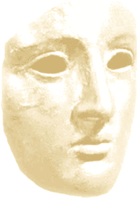

|
|
|  NORMAL, ANORMAL Cherchez à comprendre quelles furent les réactions des Romains grâce à diverses annonces de naissances insolites. |
Découvrez
les différentes étapes de son entrée dans la famille
et la communauté. |
Face à la disparition prématurée d'un enfant, quels sentiments les Anciens ont-ils éprouvés? |